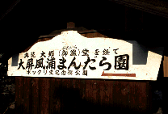
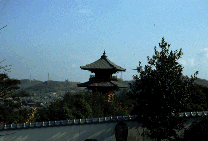
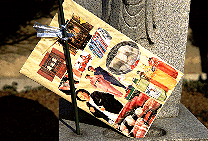
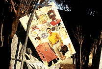
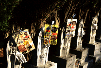

海岸寺/香川県多度津町
 
弘法大師生誕の地ともいわれる海岸寺。しかし一般的には大師生誕の地と云えば善通寺。ここの生誕説は亜流のようだ。そんな海岸寺に「大屏風浦まんだら園」なるあやしげなところがある。
奇妙な二重の塔や堂宇が怪し気な雰囲気をかもしだしている。園内はミニ百観音やミニ八十八ケ所巡りができるのだが雰囲気としては造りかけのまま放置されたものが多く荒んだ感じだ。
そんな中でとびきり奇妙なモノを発見した。お地蔵さんに幟のようなものがあげられているのだが、良く見るとそれは広告チラシを切り抜いてコラージュしたものなのだ。主なモチーフは仏壇、食べ物、衣料品など。
これが幾つもならんでいるのである。一体何なんだろう。御存じの方、御一報下さい。
  
情報提供はへりおすさんです
1998.12
珍寺大道場 HOME